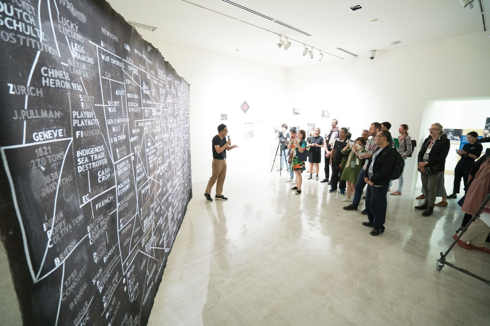

<!-- <div id="parallax-world-of-ugg" class="animate__animated"
  [ngClass]="{'animate__fadeOut': isFadeOut === true, ' animate__fadeIn': isFadeOut===false}">
  <header>
    <div class="title">
      <h3>Get to know me</h3>
      <h1>Background</h1>
    </div>
  </header>
  <section>
    <h1><u>WORK</u></h1>
    
    <h2>REI Systems</h2>

    <h1>Full-Stack Software Engineer</h1>
    <div class="background-date">
      <p> Jan 2021 - Present
        <br>
      </p>
    </div>
    <div class="background-body">

      <p><span class="first-character ny">F</span>emadex is a cloud-based enterprise data analytics system that
        will enhance FEMA’s ability to ingest, integrate, analyze,
        transform, and disseminate data. This system will replace
        FEMA’s existing Enterprise Data Warehouse and will provide a
        rapidly scalable solution for enterprise data analysis, data lake
        storage and reporting that will help drive data-driven decisions.

        As a Reactive Form-based Web application utilizing
        Microservices with Angular/Spring Frameworks, the front-end
        architecture implements reusable NPM libraries similar to a
        shared module. Micro-services are managed on the backend
        using Spring Boot and multiple Data Sources (i.e. CKAN) using
        Hibernate.
        Angular Features: Lazy loading, Angular Material (Reactive
        Forms, Tables, Dialogs, etc.). Re-usable NPM Libraires, Scalable
        Component Interaction, Services (State Management, Business
        Logic, API, etc.), Http Interceptors, Route Guards

      </p>
      <p class="line-break margin-top-10"></p>

      <p><u>Duties included:</u></p>
      <br>
      <ul>
        <li>Heavy collaboration with team designer and business analyst, Front-end web development (form-based)
          primarily using Angular, Angular Material, and reusable NPM libraries</li>
        <li>Creating Rest-APIs for back-end calls</li>
        <li>Utilizing Jenkins and other Dev-Ops tools</li>
        <li>Presenting “Demos” for contracting clients (FEMA) at the conclusion of every sprint </li>
        <li>Composing BDD Test Cases (Cucumber-Serenity) </li>
      </ul>
      <p><u>Tech Stack:</u> Angular 9, Spring Boot, PSQL, AWS, Azure, Microsoft Active Directory</p>

      <p><u>Team Composition:</u></p>
      <br>
      <ul>
        <li>Scrum Master</li>
        <li>Enterprise Architect</li>
        <li>Business Analyst</li>
        <li>Tester</li>
        <li>2 Developers</li>
        <li>2 Senior Developers</li>
      </ul>
    </div>
  </section>
  <br>
  <section>
    <h1><u>WORK</u></h1>
    
    <h2>Capital One</h2>

    <h1>Software Engineer</h1>
    <div class="background-date">
      <p> March 2020 - Present
        <br>
      </p>
    </div>
    <div class="background-body">

      <p><span class="first-character ny">D</span>eveloped and maintained Spring Boot based microservices to
        enable customers to upgrade from non-rewards cards to
        rewards cards within an Agile environment. Developed and maintained new features to a
        Scala/Spark-based
        marketing
        campaign targeting customers to upgrade credit cards through interstitial, direct-mail, and email
        channels. Created
        features for analytics control panel (via Angular) which displays metrics, monitoring, and control
        switches for our
        platform.
      </p>
      <p class="line-break margin-top-10"></p>

      <p><u>Duties included:</u> Requirements Gathering, Code Reviews, Pull Requests, Pipe Maintenance,
        Testing,
        and Code
        Development.
      </p>
      <p><u>Tech Stack:</u> Angular 2+, Spring Boot, Microservices, AWS</p>

      <p><u>Team:</u> 30 developers, 3 managers</p>
    </div>
  </section>
  <br>
  <section>
    
    <h2>Base2Technologies</h2>
    <h1>Software Developer</h1>
    <div class="background-date">
      <p> March 2019 - July 2019
        <br>
      </p>
    </div>
    <div class="background-body">

      <p><span class="first-character ny">J</span>ava Development for DOJ’s Asset Forfeiture website.
        Waterfall/agile hybrid methodology. Work requests required
        collaboration with Business Analysts via requirements docs. Responsibilities included coding,
        testing,
        defects, and
        peer-code-reviews.</p>
      <p class="line-break margin-top-10"></p>
      <p class="margin-top-10">Technologies: Wicket, Spring/Hibernate, Rational, WebSphere, DB Studios, Clear
        Case, Clear
        Quest </p>
      <p>Team: 7 Developers, 2 Senior Developers, Lead Manager</p>
    </div>
  </section>
  <br>

  <section>
    
    <h2>AINS</h2>
    <h1>Software Developer</h1>
    <div class="background-date">
      <p>February 2018 - October 2018
        <br>
      </p>
    </div>
    <div class="background-body">

      <p><span class="first-character ny">A</span>pplication development for proprietary software (eCASE)
        within Case Management websites. Agile (Scrum)
        environment.
        Reported to a Project Manager and worked under the supervision of a Senior Developer. Clients were
        serviced once the
        project went into production including platform installations, debugging, and misc. services.
      </p>
      <p class="line-break margin-top-10"></p>

      <p><u>Duties included:</u> Requirements Gathering, Code Reviews, Pull Requests, Testing, and Code
        Development.
      </p>
      <p><u>Tech Stack:</u> ASP.Net, IIS, SQL Server, Visual Studios, Windows</p>

      <p><u>Team:</u> 13 Developers, 5 Senior Developers</p>
    </div>
  </section>
  <br>
  <br>
  <h1><u>EDUCATION</u></h1>

  <section>
    
    <h2>Wayne State University</h2>
    <h3>Bachelor's of Science</h3>
    <h4>Computer Science</h4>
    <div class="background-date">
      <br>March 2014 - December 2017
    </div>
    <div class="background-body">
      <p class="line-break margin-top-10"></p>
      <p><u>Curriculum:</u> Data Structures, Algorithms, DataBases, Calculus 1-2, Probability and Statistics,
        Linear Algebra, Software Engineering, Operating Systems, Capstop Senior Project
      </p>
      <p><u>Languages:</u> C++, C, Java, SQL</p>
    </div>
  </section>
  <br>
  <section>
    
    <h2>Mannes College for Music</h2>
    <h3>Master's of Music</h3>
    <h4>Clarinet Performance</h4>
    <div class="background-date">
      September 2008 - May 2010
    </div>
    <div class="background-body">
      <p class="line-break margin-top-10"></p>
      <p><u>Curriculum:</u> Orchestra, Music Theory, Music History, Symphonic Literature
      </p>
      <p><u>Teacher:</u> Steve Williamson (Metropolitan Opera,/Chicago Symphony)</p>
    </div>
  </section>
  <br>

  <section>
    
    <h2>Cleveland Institute of Music</h2>
    <h3>Bachelors of Music</h3>
    <h4>Clarinet Performance</h4>
    <div class="background-date">
      September 2000 - May 2005</div>
    <div class="background-body">
      <p class="line-break margin-top-10"></p>
      <p><u>Curriculum:</u> Orchestra, Conducting, Music Theory, Music History, Form and Analysis,
        Counterpoint,
        Symphonic Literature, Jazz and
        American Popular Music
      </p>
      <p><u>Teacher:</u> Dan Gilbert (Cleveland Orchestra)</p>
    </div>
  </section>
</div> -->
